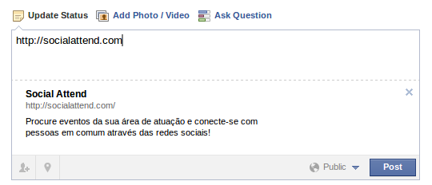

Obtenção de dados do Facebook
Gabriel Pugliese - @gabrielsapo
nUSP: 5639061
Paulo Cheadi Haddad Filho - @paulochf
nUSP: 5210744
Gabriel Pugliese - @gabrielsapo
nUSP: 5639061
Paulo Cheadi Haddad Filho - @paulochf
nUSP: 5210744

"The Open Graph protocol enables any web page to become a rich object in a social graph. For instance, this is used on Facebook to allow any web page to have the same functionality as any other object on Facebook."
Meta tags básicas:
meta property="og:url" content="http://socialattend.com/" meta property="og:title" content="Social Attend" meta property="og:description" content="Procure eventos da sua área de atuação e conecte-se com pessoas em comum através das redes sociais!"
É possivel tornar uma página qualquer em um objeto comum dentro do "grafo social" utilizando a propriedade og:type. Exemplo:
meta property="og:type" content="video.movie"